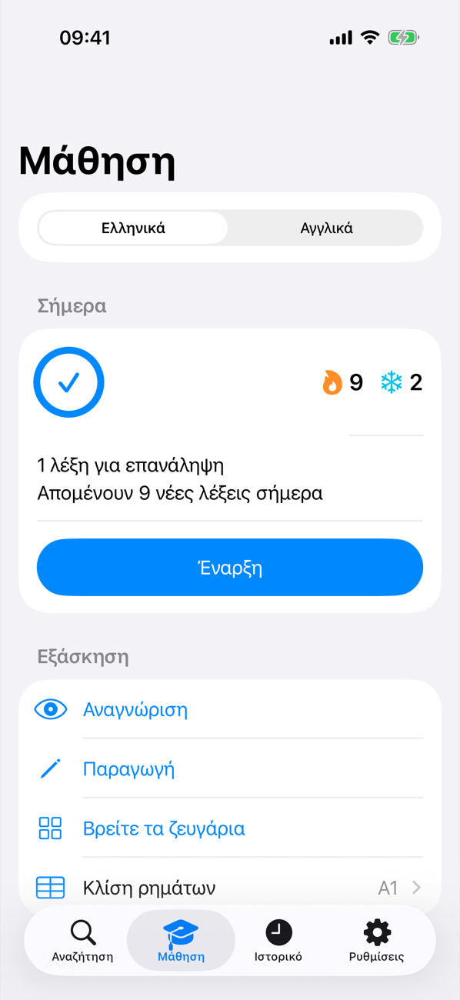
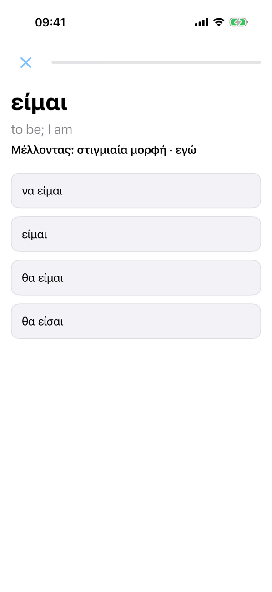
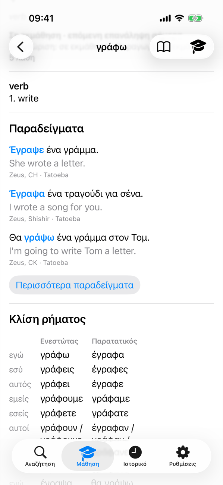
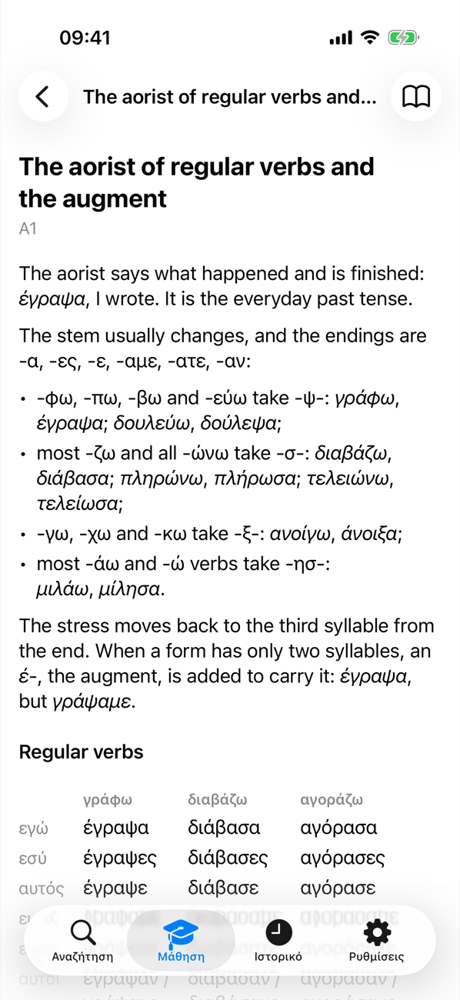

LibreDict
Ένα λεξικό χωρίς σύνδεση που σε βοηθά να μαθαίνεις λέξεις
Το LibreDict είναι ένα γρήγορο, ελαφρύ λεξικό για αγγλικά, ελληνικά, ισπανικά, ρωσικά και αραβικά. Βρες μια λέξη και μάθε την.
Λεξικό
Τα αγγλικά περιλαμβάνονται· οι άλλες γλώσσες κατεβαίνουν μία φορά και μετά λειτουργούν χωρίς σύνδεση. Η αναζήτηση βρίσκει κάθε κλιτό τύπο (το έγραψα βρίσκει το γράφω) και οι ελληνικές λέξεις δείχνουν πίνακες κλίσης και συζυγίας.
Μάθηση
Λίστες λέξεων ανά επίπεδο (ελληνικά Α1–Β1, αγγλικά A1–C2) ή δικές σου από CSV, Anki ή Quizlet. Καθημερινή εξάσκηση με επαναλήψεις σε αυξανόμενα διαστήματα και πραγματικές προτάσεις-παραδείγματα.
Γραμματική
Εξάσκηση στη συζυγία ρημάτων και σύντομες ενότητες γραμματικής, με πρώτη γλώσσα τα ελληνικά.
Απόρρητο
Χωρίς διαφημίσεις, λογαριασμούς ή καταγραφή. Όλα μένουν στη συσκευή σου.
Στιγμιότυπα




